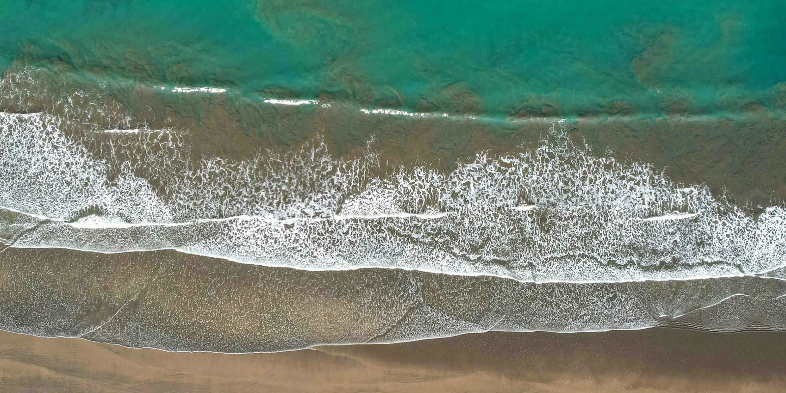

Dónde trabajamos(Pacífico sur)
Arquitectos en Dominical

Dominical está en el cantón de Osa, Puntarenas, a 13 m sobre el nivel del mar. Al año caen 3765 mm de lluvia, el 97% de abril a diciembre. Los permisos de un lote se tramitan en la Municipalidad de Osa.
Diseñamos casas, villas de alquiler y hoteles pequeños en Dominical y en cualquier otra parte de Costa Rica, desde la primera visita al lote hasta el permiso del CFIA.
(De un vistazo)
- Cantón
- Osa, Puntarenas
- Permisos
- Municipalidad de Osa
- Altitud
- 13 m
- Lluvia
- 3765 mm al año
- Época seca
- enero a marzo
- Aeropuerto de Liberia
- 5 h 35 min por carretera, 302 km
- Aeropuerto de San José
- 3 h 40 min por carretera, 190 km
- Radiación solar
- 1993 kWh/m² al año
- Energía solar
- 1596 kWh al año por kW de paneles
(El año)
La época seca va de enero a marzo: 3 meses con menos de 60 mm de lluvia. El mes más lluvioso es octubre, con 719 mm.
Las tardes más calientes son en marzo, con 29 °C en promedio, y las más frescas en octubre, con 27 °C. Las noches se mantienen entre 21 y 23 °C.
Mejor momento para empezar*
El mejor momento para empezar a construir aquí es de noviembre a marzo. Esos 5 meses suman 637 mm de lluvia; los otros 7 suman 3128 mm, 5 veces más.
El movimiento de tierra, las fundaciones y las chorreas de concreto necesitan suelo seco, y muchos caminos a los lotes solo se mantienen transitables sin lluvia. Un día con 10 mm de lluvia o más, ese trabajo casi siempre se detiene.
Una etapa de 4 meses de movimiento de tierra, fundaciones y estructura que empieza en noviembre tiene aquí unos 16 de esos días; la misma etapa empezando en abril tiene unos 30. Empezar en noviembre ahorra unos 14 días de obra detenida: unas 2 semanas de cuadrilla y maquinaria pagadas sin avanzar, y el bombeo y el drenaje que piden las excavaciones mojadas. Por eso conviene tener el permiso listo en octubre. Aun así, es una recomendación, no una regla: en lluvias se sigue construyendo, más despacio, y ninguna obra debería quedar parada meses esperando la época seca.
(El viento)
Hasta 7 km/h7 a 1414 a 2222 a 29Más de 29
En la época seca el viento de la tarde en Paso Canoas viene del suroeste.
Los espacios que se abren hacia el viento de un lado y hacia el lado opuesto del otro se ventilan solos, y un techo que bota bien el agua permite dejarlos abiertos también en los meses de lluvia.
(Viento y sol)
(El sol)
Cada punto es el sol a una hora en punto, cada tres días: cada figura en ocho es una misma hora a lo largo del año, y las líneas son el día 21 de cada mes. Los puntos naranja y rojos son las horas en que el sol no debería tocar el vidrio.
Aquí el sol nunca se aleja mucho del cenit. Al mediodía está a 80° de altura en marzo y setiembre y a 57° en diciembre, y del 15 de abril al 30 de agosto pasa por el norte, así que las paredes y ventanas que miran al norte también reciben sol.
Lo que calienta una casa es el sol bajo de la tarde. Se pone a 294°, hacia el oeste-noroeste, en junio y a 246°, hacia el oeste-suroeste, en diciembre. Ese lado necesita el alero más profundo.
El sol sale entre las 5:14 y las 5:57 todo el año, y se pone entre las 17:12 y las 17:60.
El suelo recibe aquí 1993 kWh de sol por m² al año, y los paneles solares producen unos 1596 kWh al año por cada kW instalado.
(Construir aquí)
Una casa de 300 a 500 m² para empezar: cambie el proyecto y la ruta se vuelve a dibujar.
La Municipalidad de Osa da el permiso. Tiene un parcial (1997); fuera de él rigen las reglas nacionales de construcción.21,29
-
(01) El lote y sus reglas
-
(02) El ambiente
-
No se necesita: menos de 500 m².8
No se necesita
-
-
(03) Los planos y el CFIA
-
-
En una casa, o en un edificio de 300 m² o menos, Salud aprueba con la del profesional.12
-
No revisan una casa ni menos de 4 apartamentos, aunque las reglas contra incendios igual aplican.12
No se necesita -
La Municipalidad de Osa aprobó proyectos en 9 días en promedio en 2024-25, el 16% al primer ingreso.29
-
-
(04) Licencia y obra
A menos de 200 m de la pleamar ordinaria rige la Ley de la Zona Marítimo Terrestre (Ley 6043): los primeros 50 m son públicos y no se puede construir, y los 150 m siguientes se tienen en concesión de la municipalidad, no en propiedad. Conviene saber dónde está el lote antes de comprar.
(Nuestro trabajo)


(Preguntas)
¿Cuál es el mejor momento para empezar a construir en Dominical?
Idealmente de noviembre a marzo, para que el movimiento de tierra, las fundaciones y la estructura caigan en la época seca. Una etapa de 4 meses de ese trabajo que empieza en noviembre pierde unos 16 días por lluvia fuerte, contra unos 30 si empieza en abril, unos 14 días de cuadrilla y maquinaria. Es una recomendación, no una regla: en lluvias se sigue construyendo, más despacio, y ninguna obra debería quedar parada meses esperando la época seca. Para empezar entonces, conviene tener el permiso listo en octubre.
¿Quién da los permisos de construcción en Dominical?
La Municipalidad de Osa. Los planos se tramitan primero en el CFIA, por su plataforma APC, y el permiso llega después del certificado de uso de suelo y de la carta de disponibilidad de agua.
¿Se puede construir cerca de la playa en Dominical?
No en los primeros 50 m desde la pleamar ordinaria, que son públicos. Los 150 m siguientes se tienen en concesión de la municipalidad y no en propiedad, con sus propias reglas. Más allá de los 200 m, un lote inscrito sigue el trámite normal de permisos.
¿Qué tanto calor hace en Dominical?
Las tardes promedian 29 °C en marzo, el mes más caliente, y 27 °C en octubre. Las noches se mantienen entre 21 y 23 °C. La sombra del lado oeste y el aire que cruza los espacios hacen más por el confort que cualquier otra cosa.
¿Qué tan lejos queda Dominical de los aeropuertos?
Por carretera y sin presas, a 5 h 35 min del aeropuerto Daniel Oduber en Liberia (302 km) y a 3 h 40 min del aeropuerto Juan Santamaría en San José (190 km).
Lluvia: climatología CHIRPS (CHPclim v2, Climate Hazards Center, UC Santa Barbara). Temperatura y viento: medidos en Paso Canoas, a 48 km, año típico 2011 a 2025 (Climate.OneBuilding.org TMYx, a partir de observaciones de la NOAA), con la temperatura ajustada por altitud. Días de lluvia fuerte: NASA POWER (MERRA-2), 2001 a 2020. Sol: calculado para las coordenadas del pueblo. Altitud: SRTM. Carreteras y lugares: OpenStreetMap. Datos reunidos en octubre de 2026.